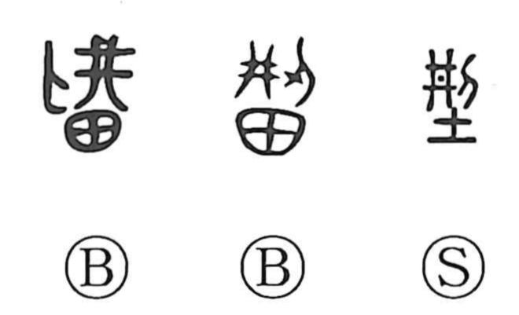

Explanation
Shirakawa reads 型 as a phono‑semantic character: 刑 serves as the on‑reading indicator, while the graphic parts sketch the craft of metal casting. The grid‑like 井 shows the outer frame of a casting mold; this frame is plastered with earth (written as 土 in most forms) to make the actual form, and the side knife 刂 (刀) is the tool used to trim and finish the mold’s surfaces. In older script, 田 often appears where 土 later stands, picturing the pot or crucible from which molten bronze is poured into the mold. From this concrete sense of igata, a casting mold, the character broadened to the general idea of kata, a form or pattern. Shirakawa also notes the related image behind 剛 “solid,” which evokes tearing off the mold—baked hard by intense heat—with a knife after casting, further anchoring 型 in the foundry scene.